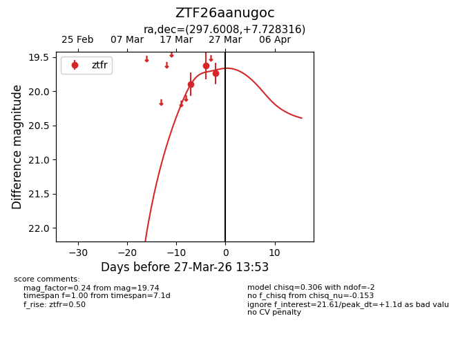
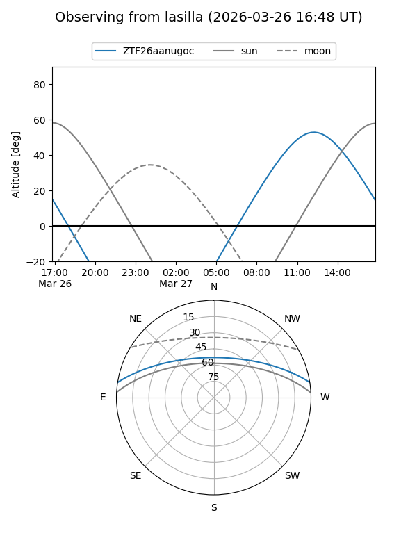
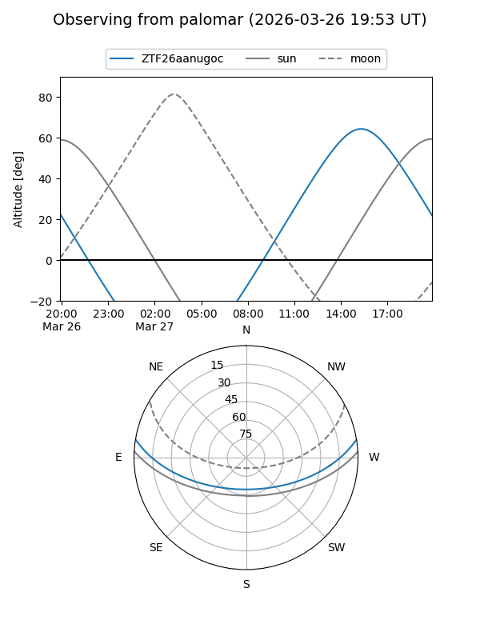
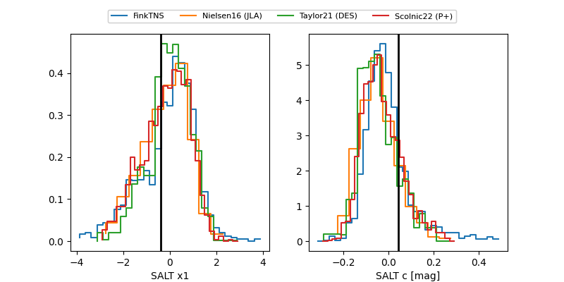

ZTF26aanugoc
Target ZTF26aanugoc at 2026-03-27 13:56
Aliases and brokers:
FINK: link
Lasair: link
ALeRCE: link
alt names
ZTF26aanugoc (ztf,fink_ztf)
Coordinates:
equatorial (ra, dec) = 297.6008,+7.72832
equatorial (HMS+DMS) = 19:50:24.20,+07:43:41.94
galactic (l, b) = (46.6910,-9.38611)
Flags:
Photometry:
last ztfr=19.74
3 ztfr detections
Lightcurve

Visibility


Additional plots
